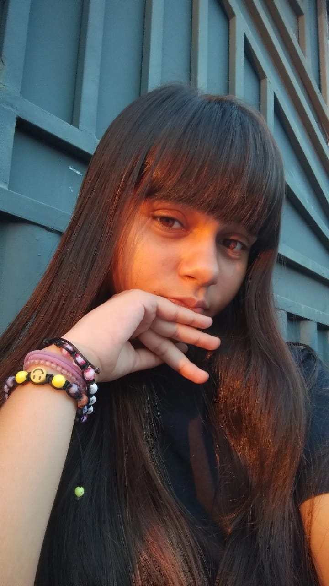

ketlly Vitória Alves Da Silva

aprendendo programação
Estudante do 1 ano do ensino médio. Estudo na fundação jicred- período da
manhã, faço curso de programação às terças e quintas-feiras no período
nortuno.
curiosidade sobre mim:
Sou uma pessoas muito focada nos meus objetivos e gosto de me dedicar no
eu que faço. Participo do Fj NEWS, onde tenho a oportunidade de registrar
eventos, fotografar momentos especiais e guardar memórias através das
fotos. sou uma pessoas muito alegre, gosto de aproveitar os momentos e
estar com as pessoas que fazem parte da minha vida. Ao mesmo tempo, sou
bastante emotiva.